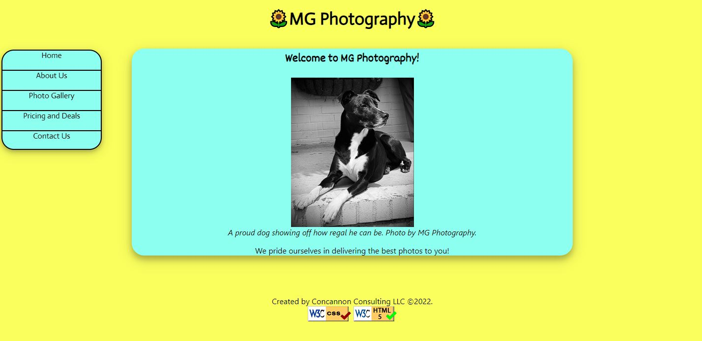

Peer Review 1
Chris Concannon
CRAP Principles
- Contrast: The light blue stands out really well from the yellow background. The text also stands out well and is easy to read.
- Repitition: The theme of the clients website stays true throughout and every page is well designed.
- Alignment: Mostly goood. All the content is aligned well. However, the nav bar on the left is not alinged with the content can looks a little off.
- Proximity: The spacing of all the content looks good. However, the nav bar doesn't have a good proximity. Its tiny and push off the left.
The Good
- Colors are pleasing to look at
- Well built and organized website
- Interactive elements such as slide shows
What needs work
- The nav bar
- Possible suggestion: Make the nav bar bigger so on the smaller pages that do not schroll, it'll look more aligned with the content.